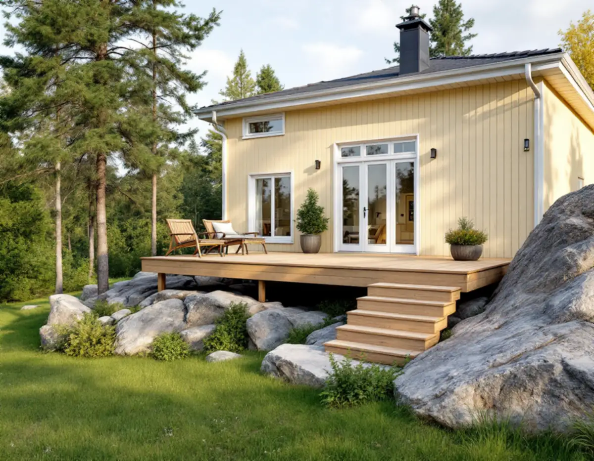
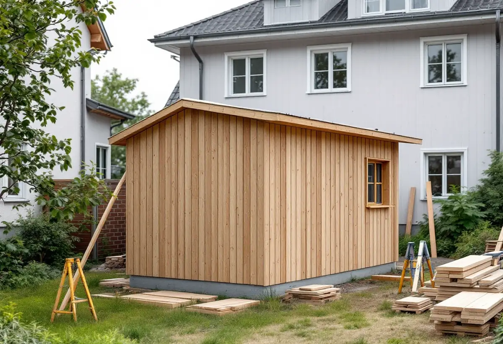

Platsbesök
Vi mäter marknivåer, avstånd till tomtgräns och, där det är aktuellt, avståndet till järnvägsspårets mitt.

Tumba, Rönninge, Tullinge och Uttran växte fram kring stationerna på Västra stambanan, och villaområdena ligger fortfarande längs järnvägen.
Beskriv jobbet kort.
Något blev fel. Kontrollera uppgifterna eller ring 08 12 410 276.
Vi tittar på jobbet på plats innan du får offert.
Du ser vad som ingår och vad det kostar.
Vi drar av ROT direkt och sköter ansökan.
Geal Entreprenad AB, Bromma. Org.nr 559303-7566.

För en altan, ett plank eller ett förråd kan avståndet till spåret avgöra om bygglov behövs. Geal Entreprenad AB bygger altaner, plank, förråd och carportar i hela Botkyrka, med gratis platsbesök och skriftligt kostnadsförslag.
Botkyrkas kulturmiljöprogram beskriver utbyggnaden av Västra stambanan under tidigt 1860-tal som en av de faktorer som fick avgörande betydelse för kommunens utveckling. Längs linjen uppstod tidigt små stationssamhällen, till exempel i Tumba och Rönninge, och kring sekelskiftet 1900 växte mer renodlade villaområden fram längs järnvägssträckningen.
Tullinge järnvägsstation öppnade 1903 och blev starten för villasamhället där. I Uttran började bebyggelsen när en ny station öppnade 1908. Programmet beskriver Uttran som en brokig blandning av stilar och volymer från drygt hundra års villabyggande, där de äldre delarna har svängda gator, bevarade naturpartier och stora tomter med husen placerade på höjdpartier.
För snickeriet på tomten får det två följder. Marken är ofta kuperad, så en altan som är låg vid husväggen kan bli hög ute vid kanten. Och ligger tomten nära spåret kan ett bygge som annars är lovfritt ändå kräva bygglov eller ett skriftligt medgivande.
På sina sidor om altan, plank och komplementbyggnad räknar Botkyrka kommun upp när utökad lovplikt gäller. Första punkten är att åtgärden görs närmare än 30 meter från ett järnvägsspårs mitt. Då krävs bygglov även för sådant som annars är lovfritt på grund av sin begränsade storlek eller enkla utformning.
Boverket anger för lovfria komplementbyggnader att de ska stå minst 30 meter från mitten av en järnväg, om inte infrastrukturförvaltaren har lämnat sitt skriftliga medgivande. Övriga punkter i kommunens lista är placering närmare en gräns än 4,5 meter utan grannarnas medgivande, åtgärder inom eller intill riksintresse för totalförsvaret och åtgärder vid byggnader eller i områden som är särskilt värdefulla från historisk, kulturhistorisk, miljömässig eller konstnärlig synpunkt.
Vid platsbesöket mäter vi därför avståndet från den tänkta altanen eller boden till spårets mitt och till tomtgränsen innan något ritas. För kulturvärdena hänvisar kommunen till sin webbkarta, till detaljplanen och till översiktsplanen.
Inom detaljplan krävs bygglov för en altan som är högre än 1,8 meter och ligger inom 3,6 meter från en byggnad, eller som är högre än 1,2 meter och ligger längre bort. Samma gränser gäller för plank. Kommunen mäter altanens höjd från markens lägsta nivå till ovansidan av altangolvet, och har marken ändrats i samband med bygget räknas höjden från den nya nivån.
Ett vanligt räcke räknas inte in. Utformas altanräcket däremot som ett tätt plank ingår det i höjden. Kombineras ett plank med en mur mäts hela konstruktionen som en helhet, så två delar som var för sig ligger under gränsen kan tillsammans kräva lov.
Kommunen påpekar också att altaner på tomten som sammanlagt är större än 50 kvadratmeter ska följa detaljplanen eller områdesbestämmelserna. En hög altan som byggs ihop med huset kan bedömas som en tillbyggnad, och en större fristående altan som en byggnad. Mer om altaner och trall finns på sidan om snickare.
Kommunen nämner garage, carport, förråd, gäststuga, växthus och bastu som exempel på komplementbyggnader. Inom detaljplan krävs bygglov om byggnaden får en byggnadsarea över 30 kvadratmeter eller en taknock högre än 4,0 meter, eller om alla lovfria komplementbyggnader och komplementbostadshus på tomten tillsammans blir större än 45 kvadratmeter. Utanför detaljplan går gränserna vid 50 kvadratmeter, 4,5 meter och 65 kvadratmeter.
Byggnaden måste vara fristående och mindre än huset den kompletterar. Inreds den som en självständig bostad räknas den i stället som komplementbostadshus.
För Uttran säger kulturmiljöprogrammets riktlinjer att komplementbyggnader ska placeras så att gatubildens helhetsverkan med friliggande hus på uppvuxna trädgårdstomter bibehålls, och att höjd, volym och utförande ska underordnas huvudbyggnaden. Omfattande utfyllnader, stödmurar och hårdgjorda ytor ska undvikas. Ska villans tak ses över samtidigt finns mer under takrenovering i Botkyrka.
Vi mäter marknivåer, avstånd till tomtgräns och, där det är aktuellt, avståndet till järnvägsspårets mitt.
Detaljplan, kulturmiljöprogram och tidigare lovfria byggnader på tomten gås igenom.
Grund, stomme, trall eller panel, räcken och trappor redovisas var för sig.
Behövs grannens eller infrastrukturförvaltarens skriftliga medgivande tar vi fram en ritning som underlag.
Plintar, stomme och beklädnad byggs enligt ritningen, med höjden kontrollerad mot gränserna.
Vi går igenom resultatet med dig och lämnar mått och ritning att spara.
Skatteverket ger rotavdrag för att bygga en altan till ett småhus om den byggs ihop med huset, och för att reparera entrétrappor, altaner och räcken. Att bygga en ny fristående byggnad, som ett garage eller en friggebod, ger inget avdrag, och inte heller att bygga staket och murar.
En tillbyggnad av ett förråd, ett garage eller en carport kan däremot ge avdrag om någon av tillbyggnadens sidor sitter ihop med den befintliga byggnadens yttervägg till minst 75 procent, eller om det finns en dörr emellan. Avdraget är 30 procent av arbetskostnaden, högst 50 000 kr per person och år och högst 75 000 kr tillsammans med rutavdrag. Material och resor ingår inte, och Geal drar avdraget direkt på fakturan.
Altanens yta och höjd över marken, hur mycket tomten sluttar och om det behövs trappor och räcken väger tyngst. För en bod eller carport avgör grunden och taket mest. Platsbesöket är gratis och du får ett skriftligt kostnadsförslag.
Altan, väggar, dörrar och inredning.
Snickare i Stockholm →Takbyte, takbesiktning och plåtarbeten.
Takläggare i Botkyrka →Tullinge, Uttran och Tumba.
Takrenovering i Botkyrka →Kartlagren, checklistan och vattnet.
Attefallshus i Botkyrka →Flytt av badrum, stammar och frånluft.
Badrumsrenovering i Botkyrka →Nytt hus, utfart och byggarbetsplats.
Byggföretag i Botkyrka →Tullinges villor och kulörbytet.
Fasadmålning i Botkyrka →Tegel, trä och puts från efterkrigstiden.
Fasadrenovering i Botkyrka →Fönstertyper per epok i Botkyrkas villor.
Fönsterbyte i Botkyrka →Radhusen i Tuna.
Fönsterrenovering i Botkyrka →Kataloghus, källargolv och trägolv.
Golvläggare i Botkyrka →Furugolv och parkett i villorna.
Golvslipning i Botkyrka →Kök i villor och radhus, för att bo kvar.
Köksrenovering i Botkyrka →Tidstypiska kulörer från 1960-tal till gamla byar.
Målare i Botkyrka →Rännor, stuprör och plåttak i Botkyrka.
Plåtslagare i Botkyrka →Material, solpaneler och takkupor.
Takbyte i Botkyrka →Ny tapet på träfiberskivor och gamla lager.
Tapetsering i Botkyrka →Villorna i Tullinge, Uttran och kartan.
Tillbyggnad i Botkyrka →Tullingehuset i omgångar.
Totalrenovering i Botkyrka →Eller ring 08 12 410 276, mån–fre 08–17.
Beskriv jobbet kort.
Något blev fel. Kontrollera uppgifterna eller ring 08 12 410 276.